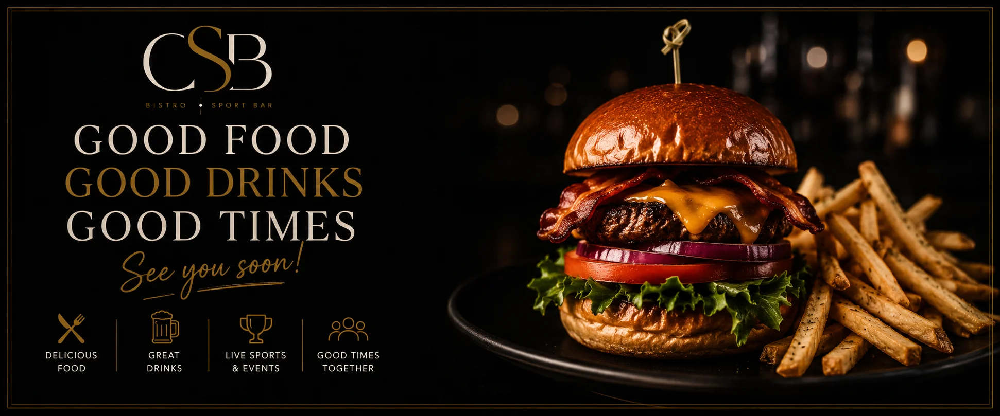

There is something special about finding a place where dinner can turn into drinks, drinks can turn into a big game, and a casual night out can become a memory worth talking about.
Going out to eat is about more than simply ordering a meal.
It is about the experience.
It is the first cold drink arriving at the table. It is sharing an appetizer with friends while deciding what to order. It is the sound of a big game playing in the background. It is the conversation that continues long after everyone has finished eating. It is the spontaneous decision to stay for "just one more."
The best restaurants and sports bars understand that people are not simply looking for somewhere to eat. They are looking for somewhere to spend time.
That is exactly what makes a place like CSB Bistro • Sport Bar such an ideal destination for everything from casual dinners to happy hour, game nights and weekend get-togethers.
The Perfect Night Doesn't Always Need a Plan
Some of the best nights happen without much planning.
Maybe you were supposed to grab a quick bite after work.
Maybe you wanted to meet a friend for one drink.
Maybe there is a game you wanted to watch.
Then you arrive, find a comfortable table, order something delicious and realize you don't actually need to rush anywhere.
That's the beauty of a great neighborhood restaurant and sports bar.
It can be whatever you need it to be.
Looking for dinner? There is something for everyone, from burgers and sandwiches to pastas, mains, salads and bowls.
Want to share something with the table? Appetizers make it easy to turn dinner into a social experience.
Meeting friends for a drink? A full selection of cocktails, beer, wine and highballs gives everyone plenty of options.
Want to watch sports? Grab a seat and enjoy the action.
And if you're stopping by during happy hour, you have even more reason to stay awhile.
Start With Something Delicious

Every great night out starts with food.
At CSB, the menu is designed for a variety of occasions. Whether you're looking for something familiar and comforting or you're in the mood to try something new, there is plenty to choose from.
Start with an appetizer and share it around the table.
Poutine, spinach and artichoke dip, loaded nachos, guacamole and chips, crispy calamari, spicy chicken bites, chicken wings and potato skins are all great choices when you're looking to enjoy something together.
And let's be honest: sometimes appetizers are the main event.
A table full of shared plates creates the perfect environment for conversation. Everyone gets to try a little bit of everything, and nobody has to commit to just one dish.
Of course, if you're looking for something more substantial, there are plenty of options to choose from.
From fish and chips and beach tacos to oven-roasted chicken, Cajun chicken, steak and shrimp scampi, the menu offers something for a wide range of appetites.
There are also burgers and sandwiches, including classic burgers, bacon cheddar burgers, crispy chicken burgers, veggie burgers and clubhouses.
And for those looking for pasta, choices include pulled pork mac and cheese, chicken fettuccini Alfredo, seafood penne and spaghetti and meatballs.
The goal is simple: come hungry, leave happy.
Happy Hour Is Better With Friends

There is a reason happy hour has become such a popular tradition.
It gives people a reason to pause.
The workday is over. The weekend is getting started. Everyone has a chance to relax.
At CSB, happy hour runs from 3PM to 6PM, giving guests an opportunity to enjoy great food and drinks at special prices.
All appetizers are $10, all beer, wine and highballs are $5, and doubles are $8.
It's the perfect excuse to meet a friend after work, bring the team together or start your evening before heading home.
And the best part about happy hour?
It doesn't have to be complicated.
You don't need a special occasion.
You don't need to wait for a birthday or anniversary.
Sometimes, "Let's grab a drink after work" is all the reason you need.
Where Food Meets Sports
A great sports bar is about more than putting a television on the wall.
It's about creating an atmosphere.
It's the energy that builds when a close game enters the final minutes.
It's the reaction when your team scores.
It's the friendly debates between tables.
It's watching a big game surrounded by people who are just as invested as you are.
That's what makes watching sports at a restaurant or sports bar such a different experience from watching at home.
At home, you might have the perfect couch.
But at a sports bar, you have the atmosphere.
You have the big screens.
You have the food.
You have a cold drink in your hand.
And most importantly, you have other fans sharing the experience with you.
Whether it's football, hockey, baseball, basketball, soccer, golf or motorsports, there is always something happening in the sports world.
And when the game is exciting, the atmosphere can become part of the experience itself.
The Ultimate Game-Day Combination
Let's face it: watching sports makes you hungry.
A big game deserves more than a bag of chips.
It deserves wings.
It deserves burgers.
It deserves nachos.
It deserves something cold to drink.
And it definitely deserves a table full of friends.
That is why the combination of food, drinks and sports works so well.
You can settle in for the afternoon and order a few appetizers to share.
You can grab a burger while watching the game.
You can order another round during halftime.
You can stay for the next game.
Suddenly, what started as a quick stop has turned into an entire afternoon.
That's the kind of experience that keeps people coming back.
Something for Everyone at the Table
One of the hardest parts about organizing a night out is finding a place where everyone agrees on what to eat.
One person wants a burger.
Someone else wants pasta.
Another person wants a salad.
Someone is craving seafood.
And there's always someone who says, "I'm not really hungry," before ordering half the appetizers.
A diverse menu makes the decision much easier.
At CSB, guests can choose from a wide range of options, making it easier to bring the whole group together.
Burgers and sandwiches.
Pastas.
Mains.
Salads and bowls.
Appetizers.
There is something for different tastes and different appetites.
That makes it a great choice for groups, casual dinners and spontaneous nights out.
A Place for Every Occasion
Not every restaurant needs to be reserved for special occasions.
In fact, the best restaurants become part of everyday life.
They are where you go after work.
Where you meet your friends.
Where you take the family.
Where you watch the game.
Where you celebrate a birthday.
Where you grab a quick lunch.
Where you meet someone for a drink.
Where you decide to stay longer than planned.
A good restaurant becomes a gathering place.
And that is what makes a local bistro and sports bar so valuable to a community.
It is a place where different kinds of people can come together for different reasons.
You might be there for the food.
Someone else might be there for the game.
Another table might be celebrating.
And someone at the bar might simply be enjoying a quiet drink.
Everyone has a reason for being there, but the experience is shared.
The Art of Staying a Little Longer
There is something satisfying about a restaurant that doesn't make you feel like you have to rush.
You finish your meal.
You look around.
Someone asks if anyone wants another drink.
Nobody says no.
The conversation continues.
Maybe another game is starting.
Maybe the music is good.
Maybe you're simply having a great time.
And that's okay.
The best nights aren't always the ones that are carefully planned from beginning to end.
Sometimes they're the ones where you realize you don't want to leave yet.
A good meal becomes a few drinks.
A few drinks become a game.
The game becomes another round.
And suddenly, the evening is much better than you expected.
Bring Your People
Restaurants are important because food brings people together.
Think about the last time you had a great night with friends.
Chances are, food was involved.
Maybe it was a birthday dinner.
Maybe it was a weekend lunch.
Maybe it was watching a playoff game.
Maybe it was simply meeting someone you hadn't seen in a while.
The food becomes part of the memory.
Years later, you might not remember exactly what you ordered, but you'll remember laughing around the table.
You'll remember the big play.
You'll remember the conversation.
You'll remember how everyone stayed longer than planned.
That's what a great restaurant experience is really about.
It's about creating a place where those moments can happen.
Your Local Spot for Good Food, Great Drinks and Good Times
At the end of the day, going out should be easy.
You shouldn't have to overthink it.
You should be able to walk in, find a seat, order something delicious and enjoy yourself.
Whether you're meeting friends for happy hour, grabbing dinner with family, catching the big game or simply looking for somewhere to unwind after a long day, CSB Bistro • Sport Bar is built around one simple idea:
Good food. Great drinks. Good times.Come for the food.
Stay for the drinks.
Cheer for your team.
Meet your friends.
And maybe, if the night is going well, stay a little longer.
Because sometimes the best nights aren't the ones you planned.
They're the ones that just happen.
We'll see you at CSB.